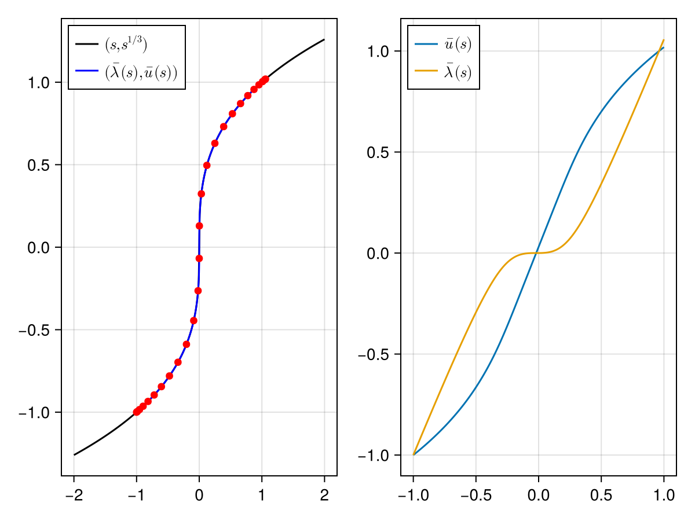

Pseudo-arclength continuation for the cube root
We prove the existence of a one-parameter family of solutions to
\[f(u, \lambda) \bydef u^3 - \lambda, \qquad \lambda \in [-1, 1].\]
Step 1: Formulation
f(u, λ) = u^3 - λ
Duf(u, λ) = exact(3) * u^2
Dλf(u, λ) = exact(-1)Define the mapping $F : \mathbb{R}^2 \times [-1,1] \to \mathbb{R}^2$ by
\[F(x, s) \bydef \begin{pmatrix} f(x) \\ (x - \num(s)) \cdot \bar{v}(s) \end{pmatrix}, \qquad x = (u, \lambda) \in \mathbb{R}^2, \quad s \in [-1,1].\]
F(x, v, w) = [f(x[1], x[2])
sum((x - w) .* v)]
DF(x, v) = [Duf(x[1], x[2]) Dλf(x[1], x[2])
v[1] v[2]]Step 2: Approximation (floating-point arithmetic)
The approximate zero
We use the pseudo-arclength continuation method to retrieve a numerical approximation of the curve.
using RadiiPolynomial, LinearAlgebra
K = 25
npts = only(grid_size(Chebyshev(K)))
arclength = 3.14
arclength_grid = [0.5 * arclength - 0.5 * cospi((j-1)/(npts-1)) * arclength for j = 1:npts]
x_grid = Vector{Vector{Float64}}(undef, npts)
v_grid = Vector{Vector{Float64}}(undef, npts)
# initialize
λ_init = -1.0
u_init = -1.0
u_init, success_newton = newton(u -> (f(u, λ_init), Duf(u, λ_init)), u_init)
direction = [0, 1] # increase the parameter
x_init = [u_init, λ_init]
x_grid[1] = x_init
v_grid[1] = vec(nullspace([Duf(x_grid[1][1], x_grid[1][2]) Dλf(x_grid[1][1], x_grid[1][2])]))
if sum(direction .* v_grid[1]) < 0 # enforce direction
v_grid[1] .*= -1
end
# run continuation scheme
for j = 2:npts
δ = arclength_grid[j] - arclength_grid[j-1]
w = x_grid[j-1] + δ * v_grid[j-1] # predictor
x_bar, success_newton_j = newton(x -> (F(x, v_grid[j-1], w), DF(x, v_grid[j-1])), w)
success_newton_j || error()
x_grid[j] = x_bar
v_grid[j] = vec(nullspace([Duf(x_grid[j][1], x_grid[j][2]) Dλf(x_grid[j][1], x_grid[j][2])]))
if sum(v_grid[j-1] .* v_grid[j]) < 0 # keep the same direction
v_grid[j] .*= -1
end
end
# construct the approximations
x_nodes = reverse(x_grid) # the nodes run from the end of the branch back to its start
x_cheb = [real(to_coef([z[i] for z = x_nodes], Chebyshev(K))) for i = 1:2]
v_nodes = reverse(v_grid)
v_cheb = [real(to_coef([z[i] for z = v_nodes], Chebyshev(K))) for i = 1:2]using CairoMakie
fig = Figure()
ax1 = Axis(fig[1,1], xticks = -2:2)
lines!(ax1, [Point2f(λ, cbrt(λ)) for λ = LinRange(-2, 2, 501)];
color = :black, label = L"(s, s^{1/3})")
lines!(ax1, [Point2f(x_cheb[2](s), x_cheb[1](s)) for s = LinRange(-1, 1, 501)];
color = :blue, label = L"(\bar{\lambda}(s),\bar{u}(s))")
scatter!(ax1, [Point2f(x_grid[j][2], x_grid[j][1]) for j = 1:npts];
color = :red)
axislegend(ax1; position = :lt)
ax2 = Axis(fig[1,2])
lines!(ax2, [Point2f(s, x_cheb[1](s)) for s = LinRange(-1, 1, 501)];
label = L"\bar{u}(s)")
lines!(ax2, [Point2f(s, x_cheb[2](s)) for s = LinRange(-1, 1, 501)];
label = L"\bar{\lambda}(s)")
axislegend(ax2; position = :lt)
fig
The approximate inverse
A_grid = inv.(DF.(x_grid, v_grid))
A_nodes = reverse(A_grid)
A_cheb = [real(to_coef([z[i,j] for z = A_nodes], Chebyshev(K))) for i = 1:2, j = 1:2]Step 3: Bounds (interval arithmetic)
x_cheb_interval = interval.(x_cheb)
v_cheb_interval = interval.(v_cheb)
A_cheb_interval = interval.(A_cheb)
#- Y bound
Y = norm(norm.(A_cheb_interval * F(x_cheb_interval, v_cheb_interval, x_cheb_interval), 1), 1)
#- Z₁ bound
Z₁ = opnorm(norm.(Diagonal([exact(1), exact(1)]) - A_cheb_interval * DF(x_cheb_interval, v_cheb_interval), 1), 1)
#- Z₂ bound
R = 10 * sup(Y)
Z₂ = exact(3) * opnorm(norm.(A_cheb_interval, 1), 1) * (exact(2) * norm(norm.(x_cheb_interval, 1), 1) + exact(R))
# verify the contraction
ie, contraction_success = interval_of_existence(Y, Z₁, Z₂, R; verbose = true)┌ Info: success: interval found
│ Y = [0.000115656, 0.000115657]_com
│ Z₁ = [0.00590216, 0.00590217]_com
│ Z₂ = [40.1106, 40.1107]_com
│ R = 0.0011565681753217454
│ Δ = [0.978952, 0.978953]_com
└ roots = ([0.000116617, 0.000116618]_com, [0.0494511, 0.0494512]_com)Step 4: Conclusion
inf(ie) # smallest error0.00011661786206197058